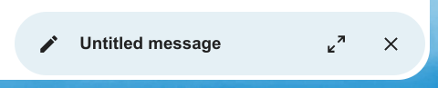

Priority inbox has 2 section Important and Others.
Messages will automatically be marked as important based on which messages you interacted with or marked as important. In the beginning you might have to manually change the importance to teach the system, but it will improve over time.
The composer modal can be minimized while writing a new message, editing an existing draft or editing a message from the outbox. Simply click the minimize button on the top right of the modal or click anywhere outside the modal.
You can resume your minimized message by clicking anywhere on the indicator on the bottom right of your screen.

Press the close button on the modal or the indicator in the bottom right corner to stop editing a message. A draft will be saved automatically into your draft mailbox.
Some mailing lists and newsletters allow to be unsubscribed easily. If the Mail app detects messages from such a sender, it will show an Unsubscribe button next to the sender information. Click and confirm to unsubscribe from the list.